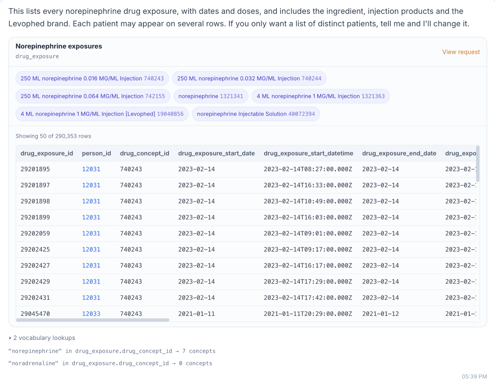
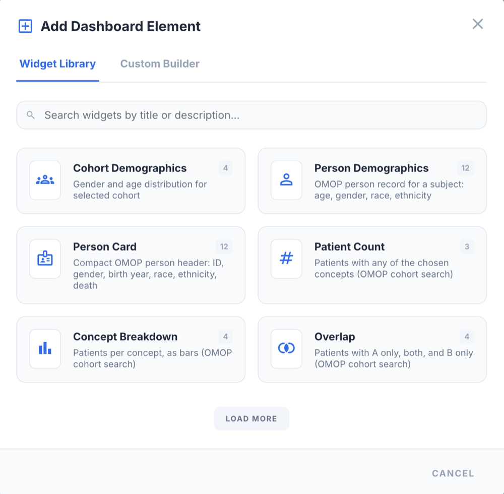
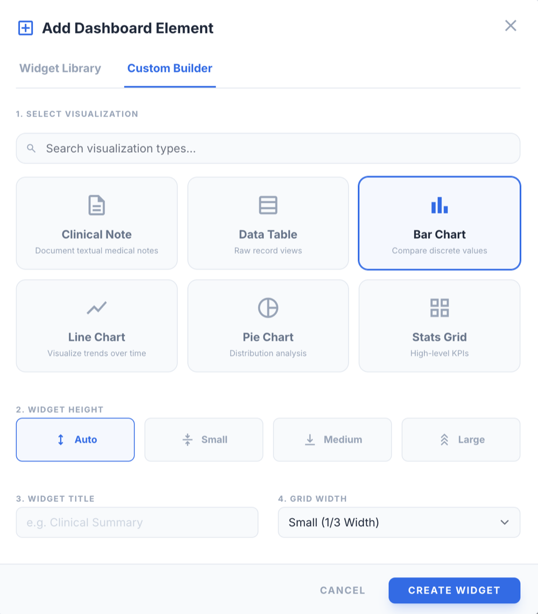
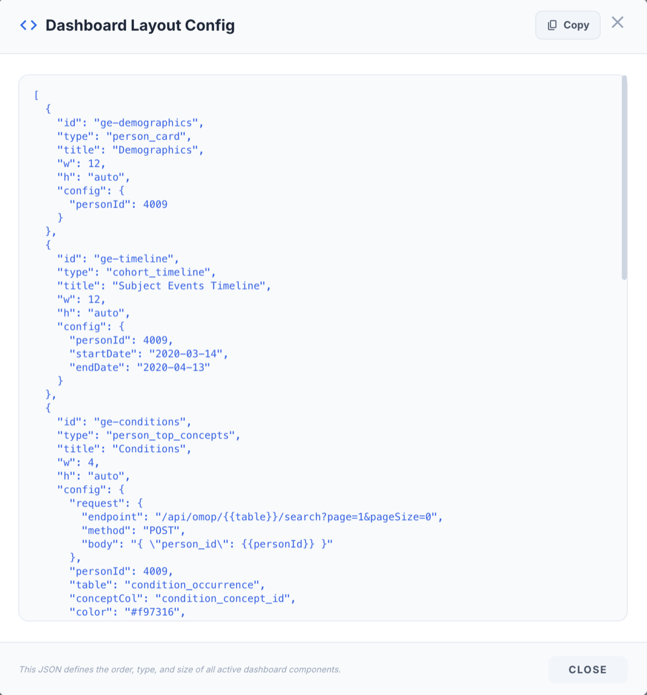
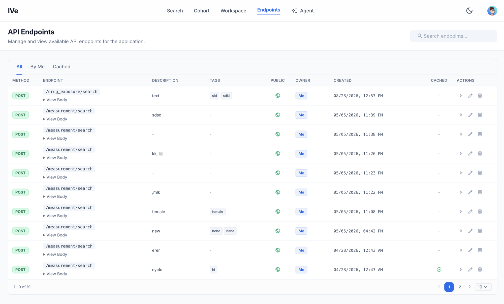

Describe the patients you need. IVe turns your question into OMOP searches in seconds, shows you exactly what it searched, and lets you check every patient by hand. The model never sees patient data.
~4 s
Question to cohort
0
Patient rows sent to the model
15
CDM v5.4 tables
9.5M+
Indexed concepts
Private and light by design
The agent decides what to search; your browser runs the search. Patient data stays between you and the OMOP database, and the model stays fast and cheap because it never has to read it.
Claude writes a search plan, the server checks it, and your browser runs it. Results go to your screen and stop there.
Sent to the model
Never sent
Every plan is validated on the server (tables, columns, concept IDs) before anything runs, then executes through the same authenticated OMOP API as any other IVe search.
Because results never go to the model, a question costs the same whether it matches ten patients or ten thousand. The rules and OMOP schema are prompt-cached, so each call pays only for what is new.
~4 s
typical answer
<1k
new input tokens per question
~80%
less input cost with a warm cache
Measured on Claude Sonnet 5.5. The ~3.8k-token prompt is cached, the searches hit IVe’s Redis-cached OMOP API, and a per-user daily cap keeps usage predictable.
Ask, then verify
An answer you can’t inspect isn’t an answer. Every result in IVe leads back to the concepts, the records and the patients it came from, using the same tools you would use without the agent.
The agent lists the concepts it chose, with their IDs, and every vocabulary lookup behind them. Asked who received norepinephrine, it also tried “noradrenaline”, picked up the injection products and the Levophed brand, and pointed out that a patient can appear on several rows. Nothing is hidden behind a summary.

Build a cohort runs the same cohort search the agent uses. Pick the criteria yourself, here sepsis and female, find the patients, and open “View request” to see the exact search, in the same form the agent sends. Same criteria, same patients, whichever way you ask.
Step through subjects to confirm they belong. Each one opens on a timeline of their OMOP events, with record tables for every domain and the waveforms recorded during the stay.
Drag widgets into place, add ready-made ones or build your own chart from any OMOP search, and save the result as a layout. Load any saved layout from the archive for the next patient. A layout is plain JSON, so you can copy it, version it and share it with your team.



Explore directly
The agent is the fastest way in, not the only one. Everything it does, you can do yourself.
Search SNOMED, RxNorm and ICD-10 directly, open the matching records, and filter them by any column. Every row leads to its patient, then to the visit, its timeline and the imaging and waveforms recorded during it.
Record counts for every CDM v5.4 table, plus the bedside waveforms and DICOM imaging that sit alongside them. Open any card to browse its records, or straight into the waveform and imaging viewers.
The agent, the cohort builder and every widget run on the same documented OMOP API. Browse it, try requests, and copy them into your own scripts.
POST /api/ive/agent # plan only
POST /api/omop/person/cohort-search # agent + builder
POST /api/omop/drug_exposure/search # cached
How it works
Describe the patients in plain English. The agent finds the matching concepts in your vocabulary and plans the search.
Read the plan: the concepts, their IDs and the lookups behind them. Ask again to widen or narrow it.
Rebuild the criteria in Build a cohort, and open patients to confirm they belong.
Save the layout, export the cohort, or call the same API from your own analysis.
Open IVe, ask your first question, and check the answer yourself. IVe is open source, so you can also read the code and run it on your own OMOP data.